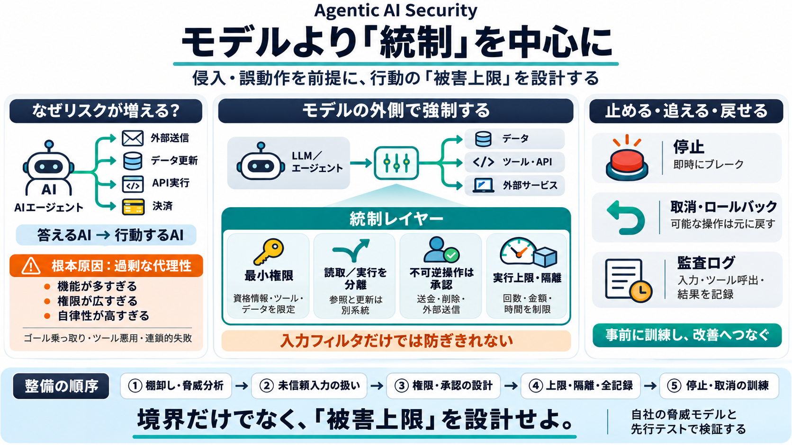

OWASP Top 10 for Agentic Applications 2026 | Cycode
The defining incident is EchoLeak (CVE-2025-32711, CVSS 9.3), the first known zero-click attack on an AI agent. A single…

モデルより「統制」を中心に
エージェント型AIは“答えるだけ”ではなく“行動”を起こすため、攻撃や誤動作の影響範囲（blast-radius）を設計で封じ込めます。
信じない前提が要点
LLM（モデル）を完全に信用できないので、モデルの外側でアクセス制御・承認・制限・記録を強制します。
境界は「防波堤」ではない
入力フィルタ（プロンプトインジェクション対策など）は有効でも、侵入を前提に損害の上限を設計します。
攻撃面が増える
エージェントはメール送信・Web閲覧・API呼び出し・データ更新・決済などを実行するため、チャットよりリスクが一段増えます。
OWASPが失敗パターン化
OWASPのAgentic Applications向けTop 10は、ゴール乗っ取りやツール悪用など“起きうる失敗”を分類し、テスト計画に落とせます。
根本原因は「代理性過剰」
根本原因は、やりすぎる機能・広すぎる権限・自動チェックなしの自律性—つまり“過剰な代理性”です。
段階的に組む
棚卸し→未信頼入力の扱い→最小権限→ツール強制→読取/実行分離→不可逆操作の承認→上限→サンドボックス→全記録→停止/取消訓練の順に整えます。
設計の核：封じ込め
モデル外で、エージェントが触れられる“資格情報・ツール・データ”を制限し、損害が爆発しない構造にします。
承認対象を決める
不可逆操作（irreversible）—送金、削除、外部送信、重要顧客データ更新など—は人の承認キューに回します。
ログは保険
侵入や誤動作をゼロにはできないため、何を試みたかを全記録し、承認の妥当性と制御の穴を改善します。
止める準備が必要
被害が広がってから止めるのは遅くなり得るため、停止・取り消し・（可能なら）ロールバックを事前に用意し訓練します。
プロンプト“だけ”では足りない
本質は「プロンプトインジェクション完全免疫」ではなく、権限・承認・上限・停止・監査記録で爆発半径を小さくすることです。
Checklistではなく、境界ではなく“被害上限”を設計せよ。
Agentic AI Security / 統制（governance）中心
The defining incident is EchoLeak (CVE-2025-32711, CVSS 9.3), the first known zero-click attack on an AI agent. A single…
Prompt injection is the technique; agent goal hijack (ASI01) is the outcome OWASP names when the injected instruction ch…
The OWASP Top 10 for Agentic Applications 2026 is a globally peer-reviewed framework that identifies the most critical s…
エヌビディアとNebiusの5GW計算能力提携計画は、エージェントの膨大なリアルタイム推論ニーズを支えるために、消費電力が原子力発電所並みのレベルに達していることを示している。「シャベル（計算能力）」や「発電機（エネルギー）」を売る企業は、…
エヌビディアとNebiusの5GW計算能力提携計画は、エージェントの膨大なリアルタイム推論ニーズを支えるために、消費電力が原子力発電所並みのレベルに達していることを示している。「シャベル（計算能力）」や「発電機（エネルギー）」を売る企業は、…